vCommunity Observability | Dashboards and Local AI for VMware
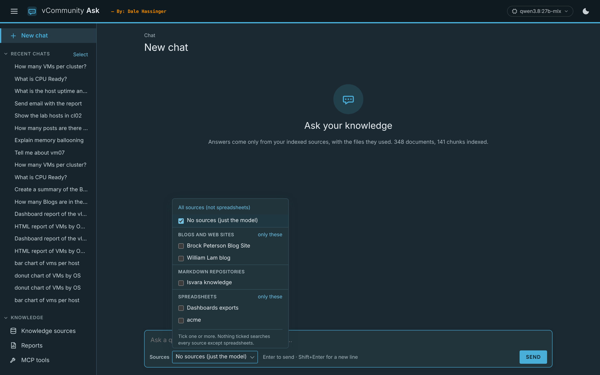
vCommunity Observability: Custom vSphere Dashboards, an API for MP Builder, and a Local AI Chat 🚀
I kept getting asked for the same kind of thing. A dashboard that shows one specific view of vCenter data. An inventory export on a schedule. A way to get that data back into VCF Operations with Management Pack Builder. And more and more, "can I just ask a question about my environment?"
Some of the customers I work with run dark sites, so the answer can't depend on the internet or a cloud service. I wanted one open-source project that covers all of that and runs in a container on a laptop or a server. So I started building vCommunity Observability.
- This is a prototype (v0.1.0) and still under development. Do not use it in production.
- The code is on GitHub: dalehassinger/vCommunity-Observability
What It Is:
Two containers that share the same look:
| Container | Port | What it does |
|---|---|---|
| vCommunity Observability | 8080 | Collects vCenter data on a schedule, stores it in SQLite, and shows it in dashboards. Every dataset is also a REST endpoint for VCF Operations Management Pack Builder. |
| vCommunity Ask | 8081 | A chat prompt answered by your local Ollama, only from the knowledge sources you choose. |
The design goals were simple:
- Cross-platform. One container image for amd64 and arm64 (Apple Silicon works fine), or run it with Python 3.11+ on Windows, macOS or Linux.
- No Grafana. The dashboards are rendered by the app itself, styled after VCF Operations, with a light and dark theme.
- Works offline. No CDN links and no runtime downloads. A PowerShell script saves both images as tarballs for dark sites.
- Open source. FastAPI, SQLite, pyVmomi, PowerShell 7. PowerCLI is the one exception.
- Easy to patch. Locked dependencies, and each module is a folder you can replace on its own.
How It Works:
The core stays small. Every feature is an add-on module, and a module can be written in Python or PowerShell. I didn't want to force one language. A collector is just a script: the core passes it the connection details, the script prints one JSON object, and the core stores it.
vCenter / VCF Operations / any REST source
│ (pyVmomi, PowerCLI, REST)
▼
Scheduler → module collectors (.py or .ps1) → JSON → SQLite
FastAPI → dashboards, REST for MP Builder, exports, Swagger docsModules can be switched on or off and reordered from the Modules page. One or many vCenters can be configured on the Settings page.
Modules (Screen Shot):
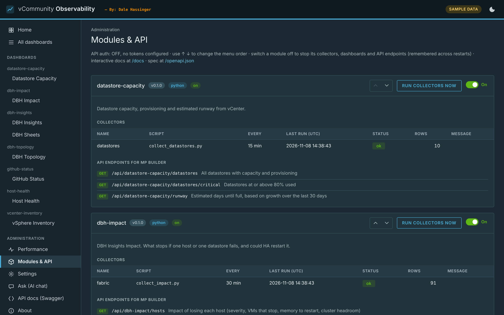
Modules Included:
| Module | Language | What it shows |
|---|---|---|
| DBH Insights | Python | The DBH Insights inventory: 27 sheets plus Cluster Capacity, with XLSX and CSV export |
| DBH Topology | Python | Hosts by cluster, datastores, and every mount between them |
| DBH Impact | Python | What stops if one host or datastore fails, and whether HA could restart it |
| vSphere Inventory | Python | Clusters, hosts and VMs in a vCenter-style tree with object pages |
| Host Health | PowerShell (PowerCLI) | Host status, alarms, CPU and memory, uptime, version |
| Datastore Capacity | Python | Capacity and free space with history for a runway estimate |
| GitHub Status | Python | An example module that reads any Statuspage site |
Scheduled exports can write any module's data to XLSX or CSV daily, weekly or monthly.
DBH Insights (Screen Shot):
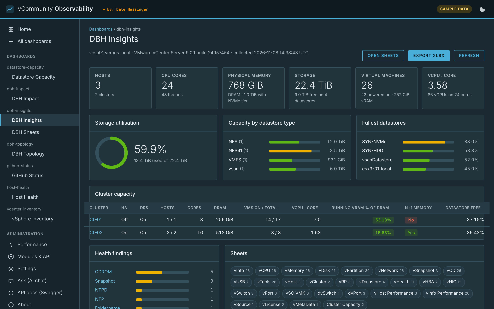
Host Health (Screen Shot):
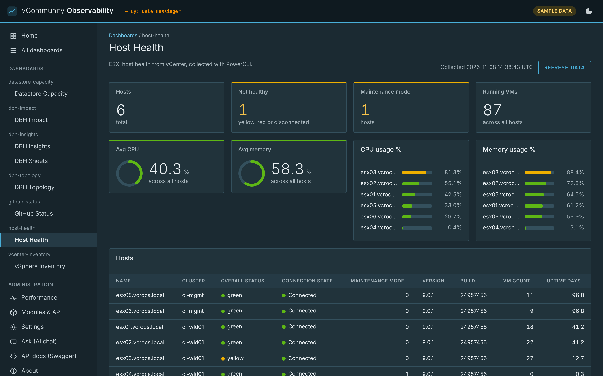
vSphere Inventory (Screen Shot):
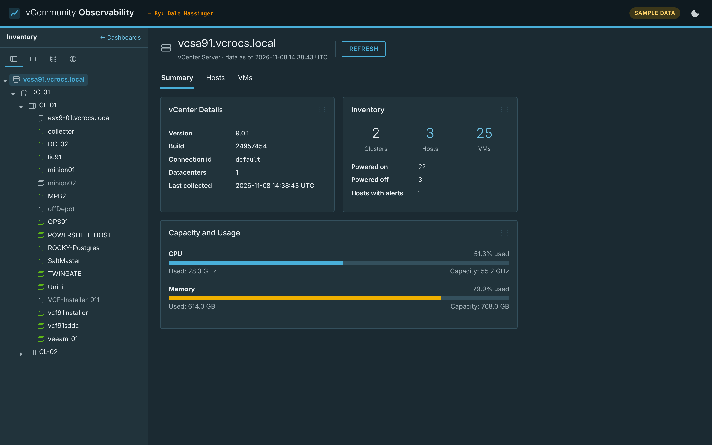
DBH Topology (Screen Shot):
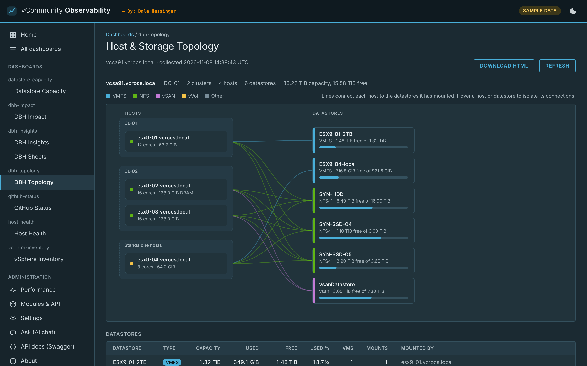
DBH Impact (Screen Shot):
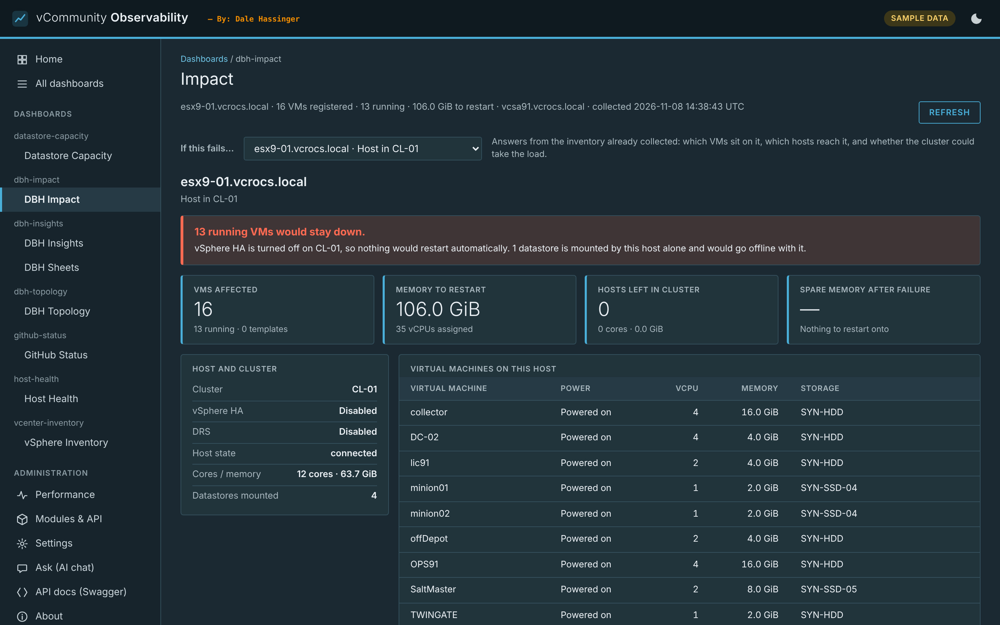
An API for MP Builder:
Every module's data is also a REST endpoint, for example /api/host-health/hosts/unhealthy or /api/dbh-impact/critical. The API requires a token. That makes it easy to point VCF Operations Management Pack Builder at the container and pull the data back into VCF Operations. The full API is documented in an offline Swagger page.
API Docs (Screen Shot):
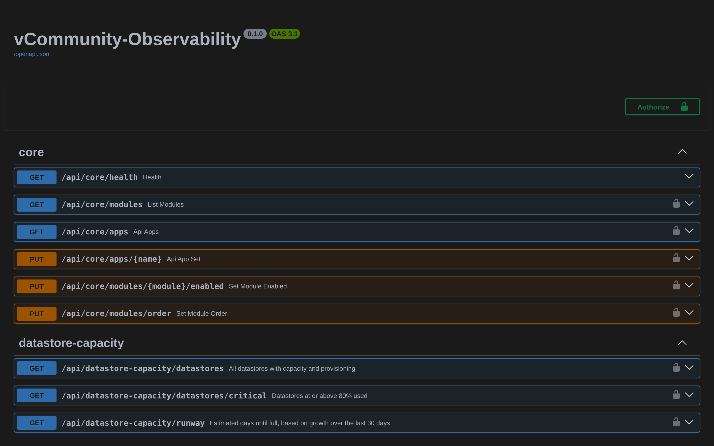
vCommunity Ask 🤓:
The second container is a chat prompt in the same VCF Operations look. You ask a question and your local Ollama answers it only from the knowledge sources you pick. The model isn't trained or fine-tuned. Ask uses retrieval: it searches your sources by meaning and by keyword, sends the best matches to the model, and the answer comes back with numbered citations.
Knowledge sources are plug-ins too:
- Markdown repository. A GitHub repo or a local folder of markdown files.
- Web site. The posts of a blog or site, optionally only a date range.
- PDF documents. Scanned ones too, with OCR.
- Spreadsheets. RVTools or the DBH Insights export. Ask can answer counting and totals questions with a read-only SQL query that it shows you.
Ask Chat (Screen Shot):
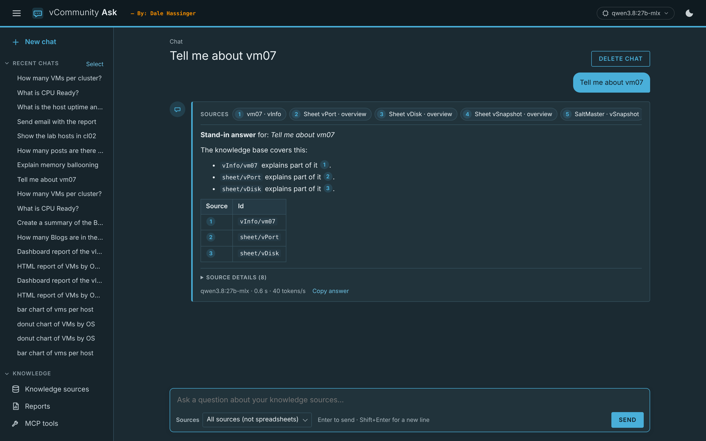
Knowledge Sources (Screen Shot):
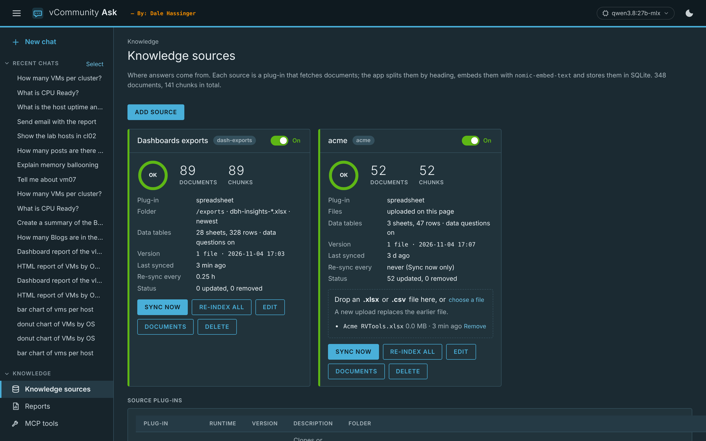
A few things I've added along the way:
- Charts, reports and dashboards. Ask for a pie or bar chart and it draws one from the query result. Say "report" or "dashboard" and it saves an HTML report that previews right in the chat.
- Your own MCP tools. Ask can call tools from my PowerShell MCP server on the Mac. Write tools ask before they run.
- Optional web search. Ollama web search, Brave search, or both, with a fixed order. Your own sources are always searched first. Leave it off at a dark site.
- No sources mode. Just the model, for rephrasing text or checking grammar.
- Pick the model from the header. Switch the Ollama chat model without leaving the chat.
Ask Chart (Screen Shot):
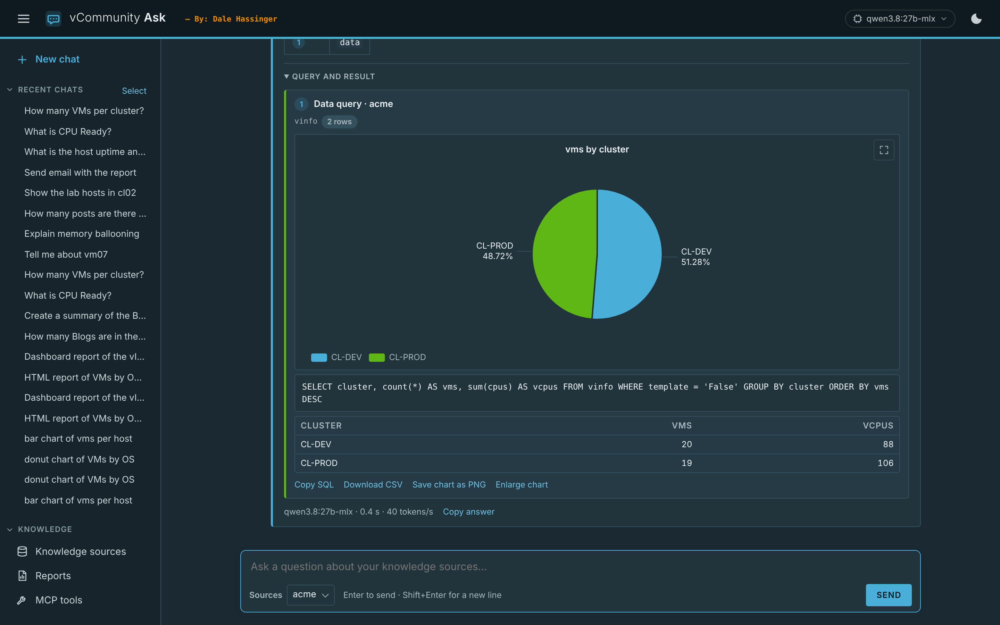
HTML Report in the Chat (Screen Shot):
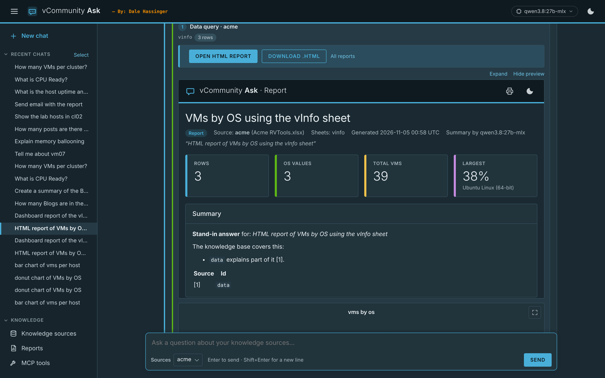
No Sources Mode (Screen Shot):
Model Menu (Screen Shot):
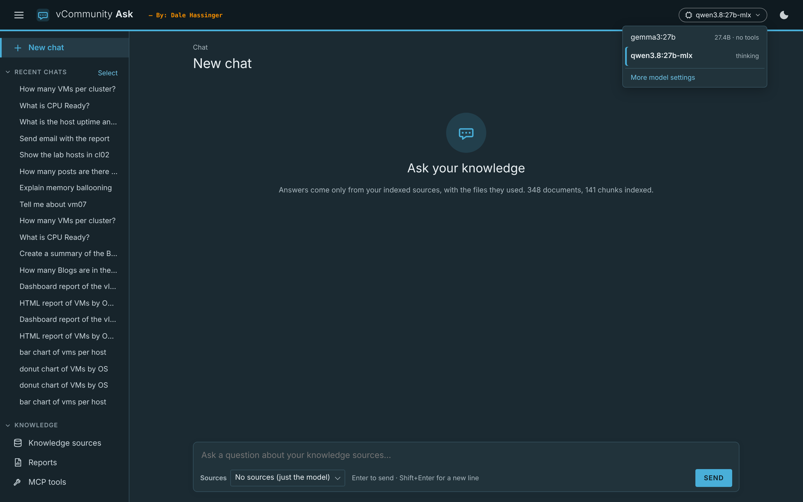
Performance 📊:
One Performance dashboard covers both containers. It shows the host, Ollama and the models loaded, answer speed in tokens per second, and both containers' CPU, memory, network and disk. When web search is on, it also counts this month's searches and estimates the cost.
Performance (Screen Shot):
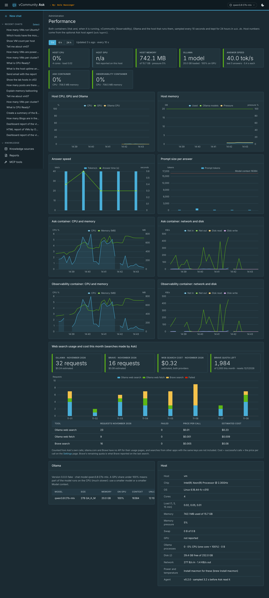
Web Search Usage (Screen Shot):
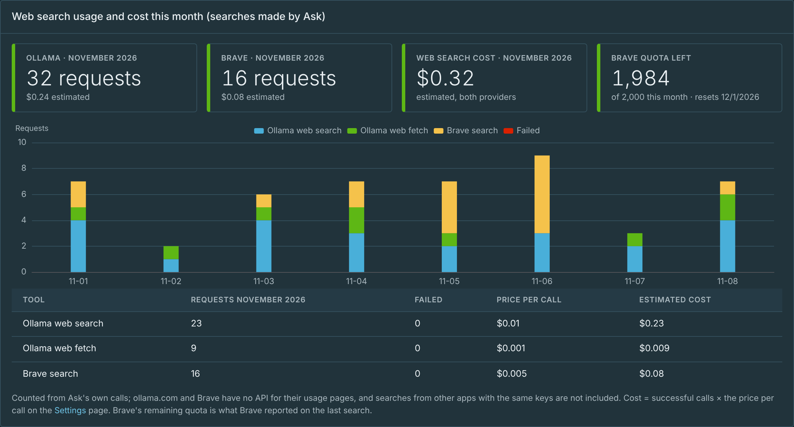
Thank You:
Ask is only as good as the sources behind it, and the vCommunity writes great ones. I use the blogs of Brock Peterson and William Lam as Ask sources, and the isvara-2 knowledge base was the first source I tested with. Thank you for sharing your work.
What's Next:
- New features based on input from the vCommunity
Wrap Up:
This started as a few dashboards and turned into a small framework. It's a simple design, but it does what I needed: vCenter data in one place, an API for MP Builder, and a local AI that only answers from sources I trust. It all runs offline. Think of it as a starting point, then add a module of your own in Python or PowerShell.
I always appreciate feedback. Let me know what you like, and what you would add next. See you in the vCommunity!